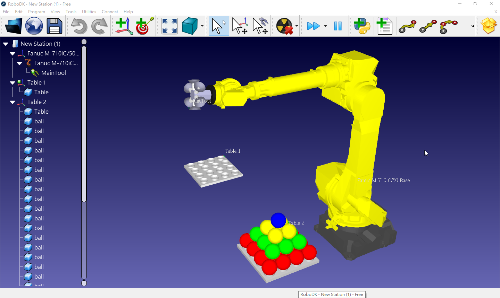

網際機械設計程式 <<
Previous Next >> CMSiMDE Debug 程式
網際 RoboDK 程式
下半學期的教學目標之三:
利用 RoboDK 作為整合英文, 數學與網際內容管理相關技術的測試工具, 希望能夠透過網際程式控制特定的六軸機械手臂 (參考, Guide).
官方 Pick and Place 範例: https://github.com/mdecourse/wcm2021/tree/main/downloads/robodk/pick_and_place
自行利用 Python API 建立 station:
從 https://github.com/mdecourse/wcm2021/tree/main/downloads/robodk/pick_and_place_kmol_mac 目錄, 可以使用 Python 建立 RoboDK station:
程式碼: https://github.com/mdecourse/wcm2021/blob/main/downloads/robodk/pick_and_place_kmol_mac/pick_and_place_kmol.py
所完成的 station:

RoboDK Forum: https://robodk.com/forum
Euler Angles: https://www.mecademic.com/en/how-is-orientation-in-space-represented-with-euler-angles
RoboDK-Doc-EN-Getting-Started.pdf
https://en.wikipedia.org/wiki/Robotics_simulator
https://github.com/RoboDK?tab=repositories
https://robodk.com/doc/en/PythonAPI/
https://robodk.com/offline-programming
https://robodk.com/doc/en/PythonAPI/robolink.html
https://www.automate.org/news/9-powerful-robodk-features-you-might-not-know-about
2016_Flapping-wing mechanism for a bird-sizedUAVs design, modeling and control.pdf
2018_Implementation of a Simulation System for Additive Task Experiments.pdf
2019_Multi-Robot Collaboration.pdf
2019_3D Printing using an Industrial Robotic Arm and a Cellulose based filament.pdf
2019_Towards the Development of Safe, Collaborative RoboticFreehand Ultrasound.pdf
2020_Simulator for Articulate Robots.pdf
2020 Robot Adventures in Python and C.pdf
https://vmayoral.github.io/robots,/ai,/deep/learning,/rl,/reinforcement/learning/2016/07/06/rl-intro/
Industrial_robots1.pdf
IntroRobotKinematics5.pdf
RoboDK 5.2.2 安裝
內定安裝於 c:\robodk
可附帶安裝 Python 3.7.3, 並安裝 robodk 模組
會先安裝 vcredist_x64_2017
安裝版 30 天內可存檔, 必須 IPv4 上網才能取得 free trial 30 天權限.
RoboDK 的 remote API 必須先 IPv4 上網後, 經官方網站確認 License 後, 才可啟動 API server, 否則只能在 localhost 上執行 API 操控.
電腦輔助設計室網路連線順序:
- 以 IPv4 NAT 連線, 啟動可攜 RoboDK 取得 limited 連線授權.
- 改以純 IPv6 網路連線, 內部建立 192.168.192.1XX 網路群, 按照組序與學員序取得 IPv4 固定網址.
- 各學員可以透過 Proxy 取得 Robot library 中的資料, 並且透過 remote API 進行網際協同操控.
Setup and Interfacing of a KUKA RoboticsLab.pdf
RoboDK API for Python:
https://raw.githubusercontent.com/RoboDK/RoboDK-API/master/Python/robodk.py
https://raw.githubusercontent.com/RoboDK/RoboDK-API/master/Python/robolink.py
The robolink module is the bridge between RoboDK and Python. Every object in the RoboDK item tree can be retrieved and it is represented by the object Item. An item can be a robot, a reference frame, a tool, an object or any other item visible in the station tree.
The following example uses the robodk and robolink libraries to move a robot.
from robolink import * # import the robolink library (bridge with RoboDK)
# 假如跨網路執行 Python remote API, 則提供位於遠端的 RoboDK server ip
RDK = Robolink('server_ipv4_ip_address') # establish a link with the simulator
robot = RDK.Item('ABB IRB 120-3/0.6') # retrieve the robot by name
robot.setJoints([0,0,0,0,0,0]) # set all robot axes to zero
target = RDK.Item('Target') # retrieve the Target item
robot.MoveJ(target) # move the robot to the target
'''
# calculate a new approach position 100 mm along the Z axis of the tool with respect to the target
from robodk import * # import the robodk library (robotics toolbox)
approach = target.Pose()*transl(0,0,-100)
robot.MoveL(approach) # linear move to the approach position
'''
有關 Python struct: https://docs.python.org/3/library/struct.html
command line option: https://robodk.com/doc/en/RoboDK-API-Command-Line-Options.html
RDK = Robolink(args='-ADDFRAME "-RENAME=Main Ref " load_object.stl')
robolink modula: https://robodk.com/doc/en/PythonAPI/robolink.html#robolink.Robolink.ShowRoboDK
RoboDK Mac 最新版安裝檔: https://robodk.com/downloads/Install-RoboDK.dmg
RoboDK Linux 最新安裝檔: https://robodk.com/downloads/install-robodk-64.tar.gz
RoboDK 透過遠端桌面執行:
由於顯示卡硬體功能受到限制, 因此透過 remote desktop 執行 RoboDK 時, 必須使用 C:/RoboDK/RoboDK-Safe-Start-VM.bat 啟動 RoboDK, 批次檔案內容如下:
cd bin
set QT_OPENGL=software
start "" RoboDK-GL2.exe -DEBUG -SKIPINI
RoboDK allow external API (reference):
目前 RoboDK 的 https://raw.githubusercontent.com/RoboDK/RoboDK-API/master/Python/robolink.py 僅支援 IPv4, 必須將 socket 傳送改為 IPv6, 可參考: https://hub.packtpub.com/ipv6-unix-domain-sockets-and-network-interfaces/
假如要在電腦輔助設計室中跨網路執行 RoboDK remote API, 可以在 IPv6 環境下創建一個內部 IPv4 群網路進行測試.
設定 RoboDK remote API 位於 Tools - Options - Other - RoboDK API, 啟動 RoboDK remote API server 後, 必須讓 RoboDK 通過操作系統的防火牆.
RoboDK on Virtualbox (reference):
I recommend you to start RoboDK by selecting:
C:/RoboDK/RoboDK-Safe-Start-VM.bat
Make sure to install graphic card drivers and allocate hardware accelerated GPU with support for OpenGL, if possible.
If it fails, we can better debug this issue by following these steps.
Start RoboDK by double clicking the file:
C:/RoboDK/RoboDK-Debug.bat
Try to reproduce the problem in RoboDK until it crashes.
Right after the crash, provide the following file:
C:/RoboDK/bin/RoboDK.debug.txt
Hint:
MoveJ(self, target, blocking=True) reference
Moves a robot to a specific target ("Move Joint" mode). self function blocks until the robot finishes its movements.
In 1 : joints/pose/item -> target to move to. It can be the robot joints (Nx1 or 1xN), the pose (4x4) or an item (item pointer)
In 2 (optional): blocking -> True if we want the instruction to wait until the robot finished the movement (default=True)
add Camera: https://robodk.com/doc/en/PythonAPI/robolink.html#robolink.Robolink.Cam2D_Add
Temp py programs:
https://robodk.com/forum/Thread-Convert-a-main-program-to-a-python-script
Set Robot base:
RDK = robolink()
robot_base = RDK.Item('Robot Base Name', ITEM_TYPE_FRAME)
robot_base.setPose(4x4 mat with the position)
參考:
提供原始碼的 http://animatlab.com/
網際機械設計程式 <<
Previous Next >> CMSiMDE Debug 程式